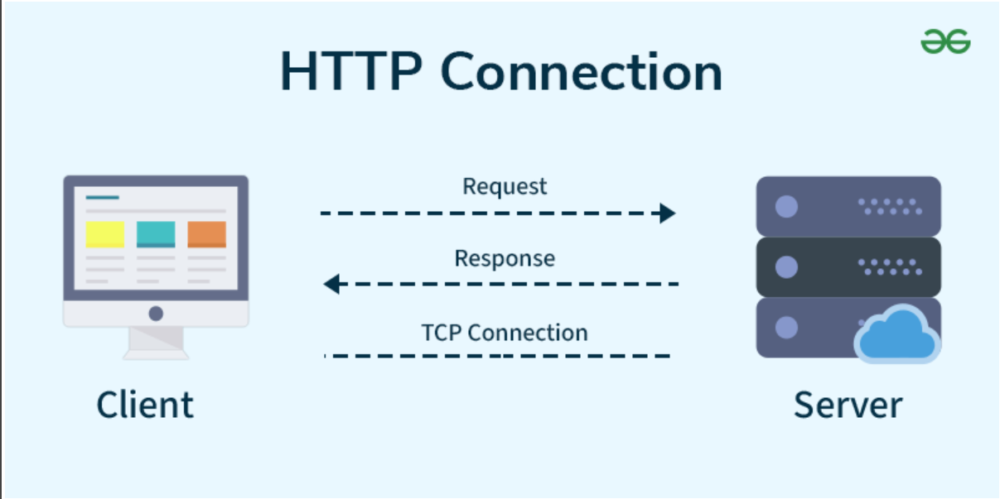

What is HTTP?
HTTP (Hypertext Transfer Protocol) is the system that allows communication between web browsers and web servers. Every time you open a website, click a link, or load an image, HTTP is working behind the scenes to transfer that information.
It acts like a set of rules that both the browser and server follow so they can understand each other and exchange data correctly.
How HTTP Works
HTTP works using a simple request and response system:
- The browser sends a request to a web server.
- The server receives and processes the request.
- The server sends back a response.
- The browser displays the content to the user.
| Step | Description |
|---|---|
| Request | Browser asks the server for a webpage or resource. |
| Processing | Server finds or generates the requested content. |
| Response | Server sends the data back to the browser. |
Request & Response Flow

This diagram shows how a browser sends a request to a server and receives a response. This cycle happens every time you interact with a website.
Why HTTP is Important
- It allows websites to load properly.
- It transfers images, text, and videos.
- It supports web applications and APIs.
- It connects browsers and servers worldwide.
Without HTTP, the modern internet would not function because there would be no standard way for devices to communicate.
Stateless System
HTTP is considered stateless, meaning each request is independent. The server does not automatically remember previous requests.
Because of this, technologies like cookies and sessions are used to keep users logged in and store information such as shopping carts.